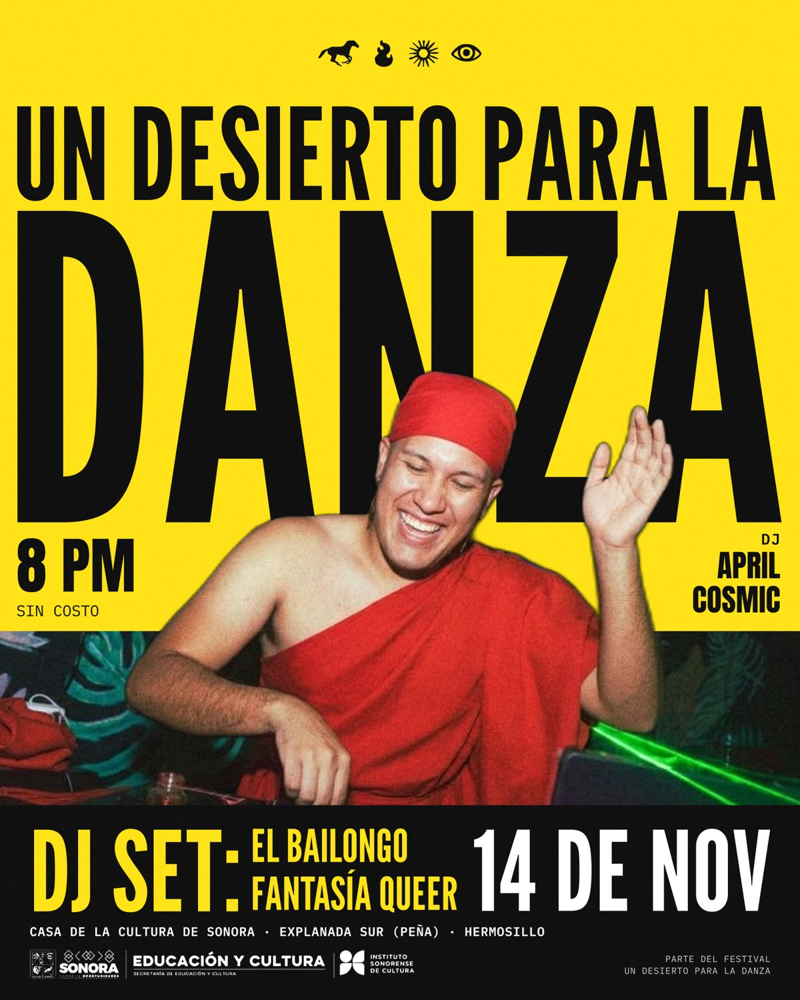

If I were a song, I'd be ↘
Please
Jessie Ware
Disco, old and new: 70s classics, nu-disco edits, and club pop run through a dance-floor filter.
After a hard stretch in my life I asked myself two questions. If I could do one thing knowing I couldn't fail, what would it be? Music. And if I knew I'd fail no matter what? Still music.
I don't play an instrument, so DJing became my language. I play disco the way I hear it: the 70s records that started it, the modern edits that keep it alive, and the pop that sounds best at 1am.
Latest set ↘
El Bailongo: Fantasía Queer
Closing party of the 33rd Un Desierto para la Danza Festival, Instituto Sonorense de Cultura
Casa de la Cultura de Sonora, Hermosillo / November 14, 2026
The party that closed the festival, outdoors and free.

Earlier sets ↘
The songs that shaped my style. At least one plays in every set.
Y Yo Sigo Aquí
Paulina Rubio
Funkytown
The original and the Rawkey remake
Lipps Inc.
Ride
Jessie Ware
I’m Every Woman
Dimitri from Paris Remix
Chaka Khan
Knock on Wood
70’s Revisited version
Amii Stewart
For
Bars, queer parties, art and fashion openings, private events
Setup
Rekordbox / Pioneer DDJ-FLX4
I can bring my own gear.
Set length
2 hours
Typically.
Based in
Ciudad Obregón, Sonora
Available to travel, subject to schedule.
Book me ↘
Subject: Booking DJ